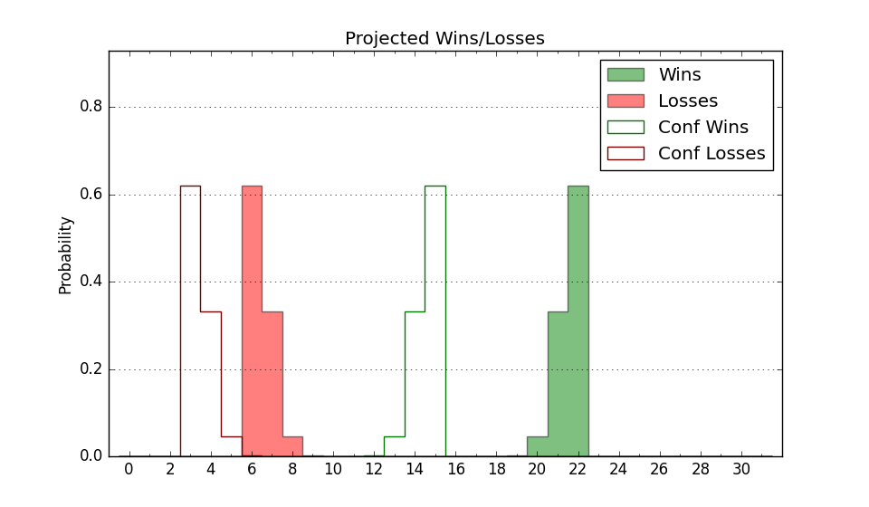

| Home | Game Probabilities | Conferences | Preseason Predictions | Odds Charts | NCAA Tournament |
| City: | Denton, Texas | |
| Conference: | American (2nd)
| |
| Record: | 12-3 (Conf) 19-6 (Overall) | |
| Ratings: | Comp.: 16.0 (58th) Net: 16.0 (58th) Off: 112.1 (82nd) Def: 96.1 (40th) SoR: 20.8 (59th) |
| Remaining | ||||||
|---|---|---|---|---|---|---|
| Date | Opponent | Win Prob | Pred. | |||
| 3/3 | Wichita St. (128) | 86.8% | W 70-58 | |||
| 3/6 | Charlotte (259) | 95.6% | W 71-53 | |||
| 3/9 | @ Temple (173) | 74.2% | W 70-63 | |||
| Previous | Game Score | |||||
| Date | Opponent | Win Prob | Result | Off | Def | Net |
| 11/5 | Evansville (244) | 94.9% | W 80-63 | 13.7 | -13.1 | 0.6 |
| 11/13 | @Minnesota (99) | 55.2% | W 54-51 | -8.1 | 19.7 | 11.5 |
| 11/18 | @McNeese St. (63) | 38.3% | L 61-68 | -8.5 | -2.4 | -10.9 |
| 11/25 | Oregon St. (76) | 72.7% | W 58-55 | -15.3 | 8.7 | -6.6 |
| 11/28 | (N) Northern Iowa (93) | 68.0% | W 68-48 | 1.0 | 27.1 | 28.1 |
| 11/29 | (N) Utah St. (41) | 38.5% | L 57-61 | -17.9 | 16.8 | -1.1 |
| 12/6 | @High Point (90) | 51.5% | L 71-76 | -7.4 | -3.1 | -10.5 |
| 12/18 | Mississippi Valley St. (364) | 99.9% | W 83-42 | 5.3 | -4.5 | 0.9 |
| 12/20 | Appalachian St. (154) | 89.2% | W 68-64 | 14.2 | -29.0 | -14.8 |
| 12/22 | Houston Baptist (265) | 95.9% | W 62-46 | -6.2 | 4.7 | -1.5 |
| 12/31 | UAB (113) | 84.3% | W 78-75 | 6.0 | -14.9 | -8.9 |
| 1/5 | @Memphis (52) | 30.8% | L 64-68 | 0.0 | 2.0 | 2.0 |
| 1/8 | Rice (164) | 90.1% | W 81-59 | 30.1 | -5.0 | 25.2 |
| 1/14 | @East Carolina (167) | 73.6% | W 69-60 | 8.2 | 2.7 | 10.9 |
| 1/18 | @UTSA (209) | 80.0% | W 72-57 | 8.8 | 2.7 | 11.6 |
| 1/22 | Temple (173) | 90.8% | W 76-67 | 0.4 | -6.4 | -5.9 |
| 1/26 | Florida Atlantic (103) | 82.9% | W 77-64 | 17.1 | -3.1 | 14.0 |
| 1/29 | @Wichita St. (128) | 65.8% | W 58-54 | -5.1 | 5.5 | 0.4 |
| 2/1 | UTSA (209) | 93.2% | L 50-54 | -36.3 | 0.6 | -35.8 |
| 2/3 | @UAB (113) | 61.3% | L 61-64 | -17.2 | 6.0 | -11.1 |
| 2/8 | Tulane (149) | 88.8% | W 76-66 | 26.1 | -24.9 | 1.2 |
| 2/11 | @Rice (164) | 72.8% | W 67-61 | 11.8 | -7.1 | 4.7 |
| 2/19 | Tulsa (266) | 95.9% | W 63-44 | -14.9 | 14.2 | -0.7 |
| 2/23 | @South Florida (178) | 75.1% | W 64-57 | -5.9 | 5.2 | -0.7 |
| 2/27 | @Florida Atlantic (103) | 58.7% | W 71-61 | 13.6 | 2.0 | 15.6 |
| Stats & Trends | |||||
|---|---|---|---|---|---|
| Current | Day | Week | Month | Season | |
| Composite | 16.0 | +0.7 | +0.7 | -1.7 | +6.7 |
| Comp Rank | 58 | +1 | -- | -9 | +27 |
| Net Efficiency | 16.0 | +0.7 | +0.6 | -2.5 | -- |
| Net Rank | 58 | +1 | -- | -10 | -- |
| Off Efficiency | 112.1 | +0.6 | +0.4 | -2.8 | -- |
| Off Rank | 82 | +10 | +7 | -27 | -- |
| Def Efficiency | 96.1 | +0.1 | +0.2 | +0.3 | -- |
| Def Rank | 40 | -1 | +1 | +8 | -- |
| SoS Rank | 110 | +7 | +10 | -12 | -- |
| Exp. Wins | 21.6 | +0.5 | +0.8 | -0.4 | +4.1 |
| Exp. Conf Wins | 14.6 | +0.5 | +0.8 | -0.4 | +3.3 |
| Conf Champ Prob | 32.4 | +12.5 | +10.0 | -21.7 | +11.6 |

| Advanced Stats | ||
|---|---|---|
| Stat | Value | Rank |
| Off Eff FG % | 0.522 | 128 |
| Off Ast Ratio | 0.131 | 271 |
| Off ORB% | 0.319 | 96 |
| Off TO Rate | 0.142 | 135 |
| Off FT Ratio | 0.377 | 71 |
| Def Eff FG % | 0.465 | 46 |
| Def Ast Ratio | 0.125 | 50 |
| Def ORB% | 0.250 | 47 |
| Def TO Rate | 0.176 | 43 |
| Def FT Ratio | 0.363 | 265 |